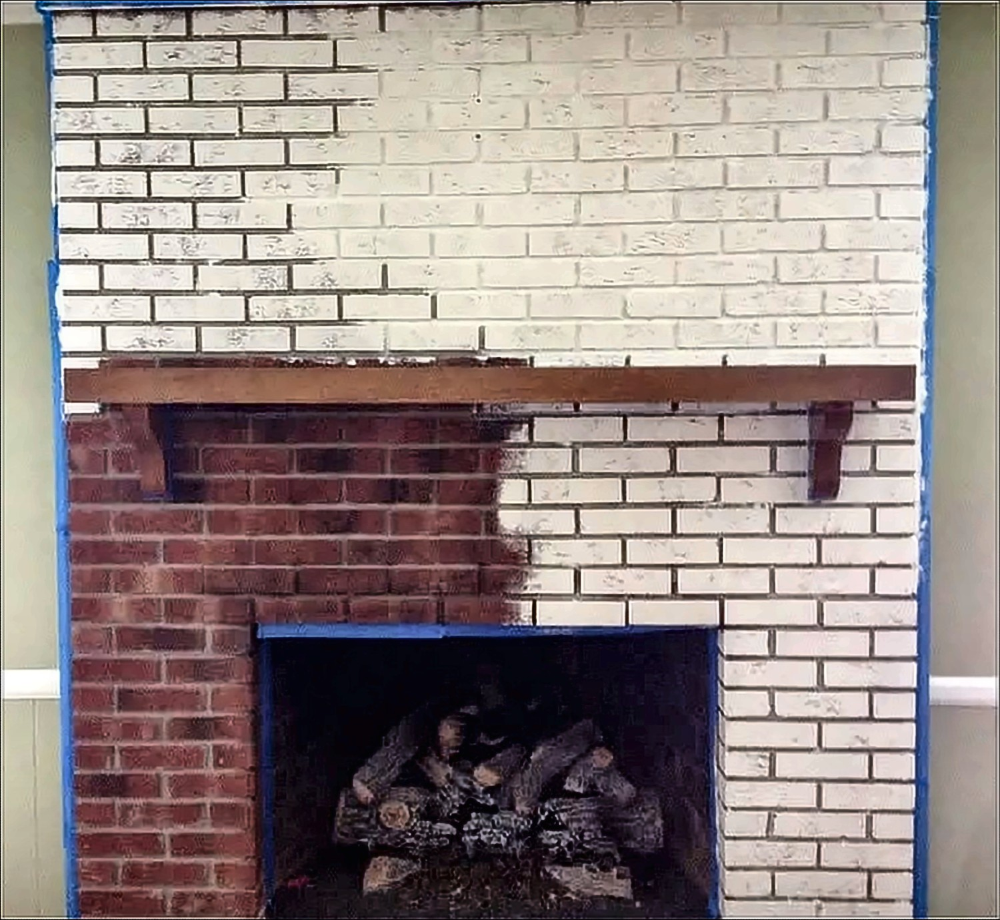
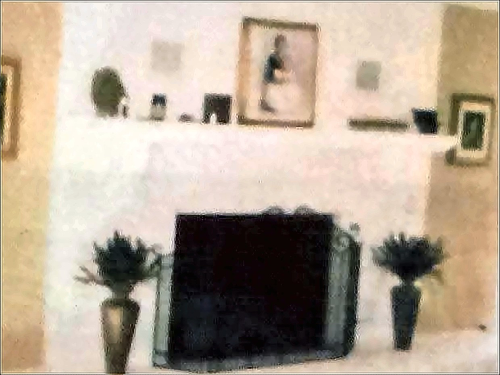
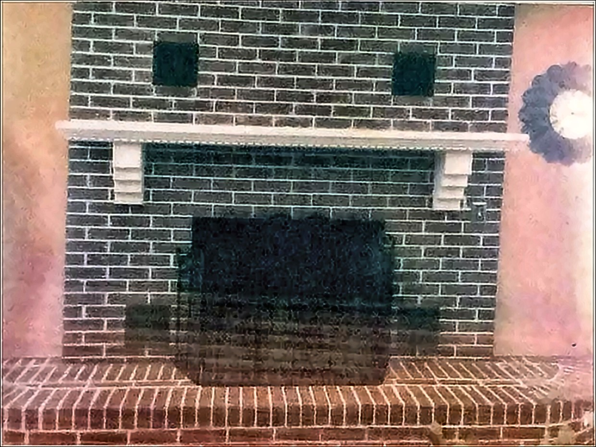

Fireplace refinishing · Pierce County, Washington
Same fireplace.
Different room.
Nothing gets stripped, sanded down or torn out. We refinish the brick, stone, tile and woodwork that's already there. The colour changes. The fireplace doesn't move.
- No demolition, no stripping
- Furniture covered, floors protected
- Free quotes from a photo

The fireplace isn't the problem.
The finish is.
Nearly every fireplace we get called out to is perfectly sound. It's just forty years old. Orange brick, or an oak mantel gone yellow, or tile nobody would choose today. It's the finish that dates it, so the finish is what we change.
No demolition. No dust barriers. Nothing hauled out to a skip and rebuilt. You keep the fireplace you've got. It just stops dragging the room down with it.
Pick a colour
What painted brick actually looks like
Paint chips lie. Brick has texture, and texture throws shadow, which changes how a colour reads once it is on a wall. This is real brick from one of our jobs. Pick a shade, then drag across to see it against the bare brick.
The bare-brick side is a tinted version of the same wall, so the texture is real but the exact tone of your own brick will differ. Screens vary and so does daylight — we bring proper samples before anything gets painted.
The work
Before, and after
A full brick wall taken from pale and dated to a deep slate, with the mantel picked out in white.


Same fireplace both times. It's an old photo, but you can see it.
What we do
Brick, stone, tile and wood
Painted brick
The biggest change you can make to a living room without a renovation. Orange, blotchy or dark brick becomes one clean surface. Soft white, warm grey, deep charcoal, whatever suits the room.
Whitewash & limewash
For when you like the texture of your brick but not the colour. A thinner, worked-in finish that lets the character underneath show through rather than covering it flat.
Wood mantels
Yellowed oak and tired pine restained to something deeper and more even, then sealed. Or painted out altogether, if the wood isn't the part you love. Either way it stops fighting everything else in the room.
Hearths & surrounds
The raised hearth and the surround around the opening, brought in line with everything else, so the fireplace reads as one piece instead of three.
We work on the surround, the mantel and the face of the hearth. Not inside the firebox, and nothing to do with gas, venting or structure.
Not sure what yours needs
Three questions
Answer these and we will tell you what we would most likely suggest, including when we would suggest leaving it alone.
Question 1 of 3
What bothers you most about it?
Question 2 of 3
What is the surround made of?
Question 3 of 3
Do you want to keep the texture?
What we would suggest
—
How it goes
How this usually goes
- 01
Send a photo
Fill in the form below and tell us about your fireplace. We'll write back and let you know where to send a picture. A phone photo is plenty.
- 02
Get a price
In writing, covering the work, the finish and the Washington sales tax. The number you're given is the number you pay.
- 03
Pick your colour
Samples come to you and get held against your own wall, in your own light. Take as long as you want over it. Everyone does.
- 04
The work gets done
Taped off, covered, painted, cleaned up, and the furniture back where it started before we go.
How we work
The part people actually worry about
We've been refinishing brick, stone and mantels for years, and it's the only thing we do. This isn't a sideline of a painting business. The fireplace is the whole job.
Floors covered. Furniture moved and put back where it was. Edges taped so the lines come out clean against your wall. And if something turns up once we've started, you hear about it before it costs you anything.
Questions we get
The things people ask before they call
Can you really paint brick? Is it a mistake?
It is close to permanent. Taking it back off is a far bigger and messier job than putting it on, so it is worth sitting with rather than deciding on a whim. That said, it is the biggest change you can make to a living room without a renovation. And if you like the texture and only want the colour taken down, a limewash is the middle option most people do not know exists.
Will it peel or flake later?
Not if the surface is prepared properly and the right products go on. Brick is porous, so it needs a masonry primer that soaks in rather than sitting on top. Cheap paint straight onto dirty brick is where the horror stories come from.
How long before I can light a fire again?
Touch dry the same day, but the finish keeps hardening for a while after that. We will give you a straight answer for the specific product on your job before we leave.
What does it cost?
It comes down to size more than anything. A small surround and a floor-to-ceiling wall are very different jobs, then it depends whether the mantel and hearth are included. There is no single honest number we can put on a web page, which is why the quote is free and in writing. The price we give includes Washington sales tax, so the number you are told is the number you pay.
How much mess is this going to make?
Less than you are picturing. Nothing gets stripped, sanded down or torn out, so there is no demolition dust. Floors get covered, furniture gets moved and put back, and edges get taped so the lines come out clean against your wall.
Can you match a colour I have already picked?
Usually. Bring the chip or the paint name and we will work to it. Worth knowing that colours read differently on brick than on a flat wall, because the texture throws shadow. We will show you a sample on your own fireplace before committing.
Do you work inside the firebox?
No. We work on the surround, the mantel and the face of the hearth. Nothing inside the firebox, and nothing to do with gas, venting or structure. If that is what you need we will say so and point you at someone who does it.
What if I decide I hate it?
This is why we push the sample step and why we would rather talk you out of a colour than let you find out afterwards. Take as long as you want over that part. Everyone does.
Where we work
Where we come out to
We keep it fairly tight on purpose. These are the towns we know, and there's no sense pretending otherwise about the rest.
- Fife
- Milton
- Edgewood
- Puyallup
- Federal Way
- Tacoma
- Sumner
- Auburn
Get a price
Send us a picture of it
Honestly, that's all we need to start. A phone photo, taken from wherever you happen to be standing. It doesn't need to be a good one.
We'll write back and tell you what we'd do with it and what it would cost. No visit, no appointment, nobody turning up at your door.
And if we think it's not worth doing, we'll tell you that too.